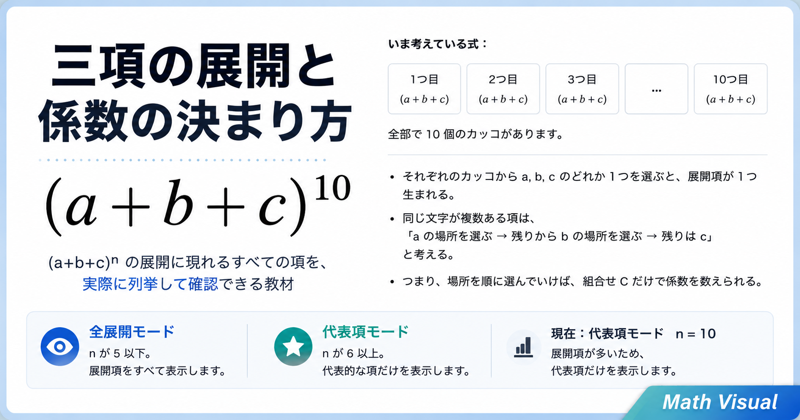

ドモルガンの法則
深進数学I p.90
ベン図を用いてドモルガンの法則を視覚的に理解する教材。 左辺と右辺が同じ領域になることを、手順に沿って確認できる。
Math Visual
分野ごとに教材ページへ移動できます。

Pick Up
多項定理の係数を、展開項の列挙と「場所の選び方」から視覚的に確認できる教材。
深進数学II p.9
\((a+b)^n\) の展開で、各項がどのように生まれ、係数が決まるかを視覚的に理解する教材。 \(a\) と \(b\) の選び方をたどりながら、組合せ \(nCr\) と係数の対応を確認できる。
深進数学II p.10
\((a+b+c)^n\) の展開で、各項がどのように生まれ、係数がどのように決まるかを視覚的に理解する教材。 展開項を同類項ごとにまとめながら、\(a\)、\(b\)、\(c\) の場所の選び方と、組合せ \({}_n\mathrm{C}_r\) や \(n!/(p!q!r!)\) との対応を確認できる。
深進数学II p.106
三角関数の値 \(\sin\)、\(\cos\)、\(\tan\) を、ゲーム形式で素早く答える練習教材。 度数法と弧度法を切り替えながら、タイムアタック形式で基本角の値を確認できる。
深進数学B p.60
二項分布 \(B(n,p)\) の確率、平均、分散を表とグラフで視覚的に理解する。 試行回数 \(n\) と成功確率 \(p\) を変えながら、分布の形の変化を確認できる。
深進数学B p.67
測定値のヒストグラムを、なめらかな正規分布曲線で近似していく見方を視覚的に理解する教材。 データ数と階級数を変えながら、棒の面積の和から曲線下の面積へつながる考えを確認できる。
深進数学B p.68
正規分布 \(N(m,\sigma^2)\) の平均 \(m\) と標準偏差 \(\sigma\) が、曲線の中心と広がりをどう変えるかを視覚的に理解する教材。 \(x=m\)、\(x=m-\sigma\)、\(x=m+\sigma\) を動かしながら、曲線下の面積が常に1であることを確認できる。
深進数学B p.69
標準正規分布 \(N(0,1)\) で、確率を曲線下の面積として見る考えを視覚的に理解する教材。 区間確率、累積確率、\(P(0\le Z\le u)\) の面積を切り替えて確認できる。
深進数学B p.80
1から999までの奇数を発生させて平均する実験をくり返し、標本平均が500の近くに集まる様子を視覚的に理解する教材。 公式 \(\sigma(\bar{X})=\sigma/\sqrt{n}\) から求めた標準偏差、大数の法則、標準化した値の分布を実験で確認できる。
深進数学C p.45
ベクトル \(\vec{p}\) を \(s\vec{a}+t\vec{b}+u\vec{c}\) の形で表す様子をスライダー操作で視覚的に理解する。
深進数学III p.146
関数 \(y=x^2\) の面積を長方形の和で近似しながら積分への近づき方を視覚的に理解する。
深進数学III p.159
円柱を平面で切ったときの断面と体積の関係を立体表示で視覚的に理解する。
深進数学III p.162
円の回転でできる円環体の構造と体積の考え方を視覚的に理解する。
深進数学III p.163
サイクロイドを \(x\) 軸のまわりに回転させてできる立体を視覚的に理解する。